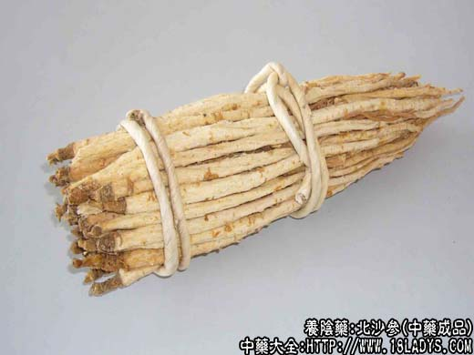

原文连接:https://www.daquan.com/post/2274.html



本品为常用中药。始终《神农本草经》。古代本草所载均属南北沙参。至清代《本草逢源》，始分为北北沙参和南北沙参两种。习惯认为北北沙参质佳，药用以北沙参为主。
（一）北沙参
别名：珊瑚菜，辽北沙参。
来源：为伞形科多年生草本植物珊瑚菜的干燥根。栽培品。
产地：主产于山东莱阳、烟台、文登、海阳、辽宁盖平、复县、河北等地。现其它各省多引种。
植物形态：多年生草本，高7～35厘米，全体被灰褐色绒毛。根细长，圆柱形，长15～35厘米，直径0.5～1.5厘米，罕有支根，茎部分埋于地下，地上部分直立不分枝。叶由基部生出，互生，具长柄，长达12厘米，基部呈阔鞘状，边缘膜质；叶卵圆形，三出分裂至二回羽状全裂，裂片卵圆形，长1.5～6厘米，宽1～4厘米，边缘具大小不等的锯齿，叶片质厚。复伞形花序顶生，总伞柄长4～10厘米，无总苞，伞幅10～14厘米，长1～2厘米，不等长，小总苞片8～12枚，披针形，花梗15～20枚、长1.5～3毫米；花白色，5瓣。双悬果，球形或椭圆形，直径达1厘米，有棕色粗毛；分果有5个角棱。
采集加工：秋季采收。挖取根部，除去茎叶及须根，洗净泥土，放沸水中烫片刻，取出放凉后，剥去外皮，晒干或烘干。也有不去外皮直接晒干的。
性状鉴别：去皮北沙参细长圆柱形，长15～35厘米，中部直径0.3～1厘米；顶端略细，具断茎残痕，中部稍粗，下端渐细，表面淡黄白色，显粗糙，有细纵皱纹或沟纹及细裂隙，并有棕黄色皮孔和多数突点状须根残留。全体糊化角质样。质硬而脆，易折断，断面不整齐，显射线状花纹，中部有白色或淡黄色不质心，约占直径1/3，形成层环状，棕黄色，韧皮部淡黄白色，气微，味淡味甘。
带皮生晒北沙参，外皮淡棕色，断面韧皮部白色粉性，其余同上。
以根条细长均匀，内碴淡黄白色或白色，质坚脆者为佳。
主要成分：含生物硷和淀粉。
功效与作用：养阴清肺，除虚热，治燥咳。实验证实有轻度祛痰作用。
炮制：切咀，生用。
性味：甘淡、微寒。
归经：入肺、胃经。
功能：养阴清肺，益胃生津。
主治：肺热阴伤燥咳，胃燥咽干口渴。
临床应用：为润燥常用药。
1、治肺虚燥咳（久咳、干咳、痰少、津液不足），故肺结核、老年慢性气管炎的干咳均宜用北沙参，常配麦冬、玉竹、桑叶，加强清润作用，方如北沙参麦冬饮。又可单用北沙参末6g（或加配甘草末3g），开水送服。可长期服用。
2、治热病后阴虚津少（相当于有发热的感染性疾病恢复期），觉咽喉干燥，口渴欲饮，大便干结，脉弱无力，或有虚热，此时用北沙参配麦冬、生地等，通过清余热而润燥，方如益胃汤。
使用注意：北沙参有滋腻濡润，不利于透发表邪，故咳嗽而有实热、脉实苔腻者不宜用。习惯上北沙参多用于体虚者的慢性咳嗽，而外感初期、急性上呼吸道炎、急性气管炎之咳嗽一般不用。必须使用时，也要配伍葛根、淡豆豉、山栀皮等以助解表清热。
用量：6～15g。用于清补，量可稍大。
处方举例：北沙参麦冬饮《温病条辨》：北沙参9g、麦冬6g、玉竹9g、生扁豆9g、冬桑叶6g、花粉4.5g、生甘草3g，水煎服。久热久咳再加地骨皮3g。
益胃汤：北沙参12g、生地15g、麦冬9g、玉竹9g、冰糖15g（溶化），水煎服。